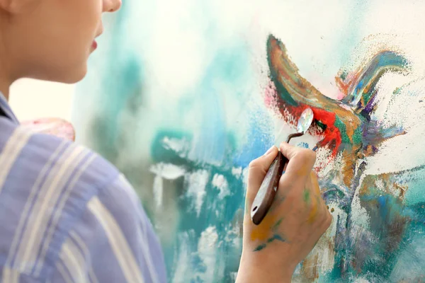

A arte surgiu nos primórdios da humanidade e encontrou expressão inicial nas pinturas rupestres e esculturas da Pré-História, revelando a capacidade única dos seres humanos de comunicar emoções e experiências por meio de formas simbólicas.
A origem da arte remonta aos primórdios da humanidade, refletindo a capacidade única dos seres humanos de expressar emoções, pensamentos e experiências por meio de formas simbólicas. Ao longo da história, a arte passou por diversas transformações, refletindo as mudanças sociais, culturais e tecnológicas das civilizações.
A arte no Brasil foi marcada por uma diversidade cultural influenciada pela colonização portuguesa, pela presença de povos indígenas e pela contribuição africana. No período colonial, a arte sacra predominava, com igrejas ornamentadas por talha dourada e pinturas que refletiam a religiosidade da época. Com o passar dos séculos, artistas brasileiros buscaram desenvolver uma identidade artística própria, influenciada por movimentos como o modernismo.